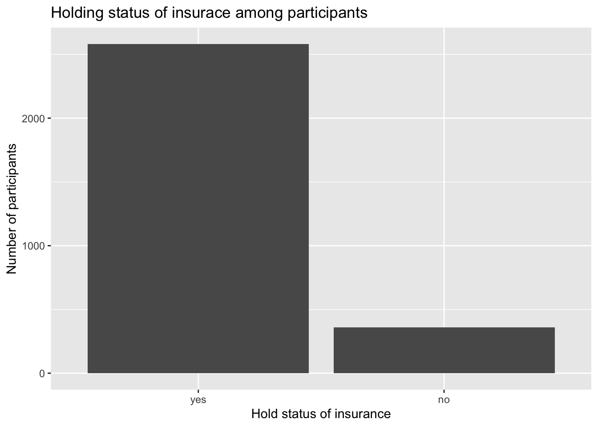

## ── Attaching packages ─────────────────────────────────────── tidyverse 1.3.1 ──## ✓ ggplot2 3.3.5 ✓ purrr 0.3.4
## ✓ tibble 3.1.6 ✓ dplyr 1.0.7
## ✓ tidyr 1.1.3 ✓ stringr 1.4.0
## ✓ readr 2.0.1 ✓ forcats 0.5.1## ── Conflicts ────────────────────────────────────────── tidyverse_conflicts() ──
## x dplyr::filter() masks stats::filter()
## x dplyr::lag() masks stats::lag()read_csv("data/dataset_basic.csv") %>%
drop_na() %>%
mutate(
insuredgateway = factor(insuredgateway, levels = c(1,2), labels = c("yes", "no"))) %>%
ggplot(aes(x = insuredgateway))+
geom_bar()+
labs(
x = "Hold status of insurance",
y = "Number of participants",
title = "Holding status of insurace among participants")## Rows: 28734 Columns: 12## ── Column specification ────────────────────────────────────────────────────────
## Delimiter: ","
## dbl (12): agegroup, insure, smoker, everyday, numberperdaya, cost20cigarette...##
## ℹ Use `spec()` to retrieve the full column specification for this data.
## ℹ Specify the column types or set `show_col_types = FALSE` to quiet this message.
insur_type <- c("Employer", "Medicare", "Milit/CHAMPUS", "Uninsured", "Self-purchased", "Medicaid/Family Health+", "COBRA/other")
insur_meaning <- c("Employer-sponsored health insurance is a health insurance selected and purchased by your employer and offered to eligible employees and their dependents.",
"Medicare is federal health insurance for people 65 or older, some younger people with disabilities, people with End-Stage Renal Disease",
"Health Care progam for military",
"Not insured",
"Insurance purchased by individual choice",
"Medicaid/health insurance program for adults who are aged 19 to 64 who have income too high to qualify for Medicaid",
"Consolidated Omnibus Budget Reconciliation Act, which gives some employees the ability to continue health insurance coverage after leaving employment, or other types of insurance.")
insur <- data.frame(insur_type, insur_meaning) %>%
dplyr::rename(
"Insurance type" = insur_type,
"Insurance type meaning" = insur_meaning
)
knitr::kable(insur)| Insurance type | Insurance type meaning |
|---|---|
| Employer | Employer-sponsored health insurance is a health insurance selected and purchased by your employer and offered to eligible employees and their dependents. |
| Medicare | Medicare is federal health insurance for people 65 or older, some younger people with disabilities, people with End-Stage Renal Disease |
| Milit/CHAMPUS | Health Care progam for military |
| Uninsured | Not insured |
| Self-purchased | Insurance purchased by individual choice |
| Medicaid/Family Health+ | Medicaid/health insurance program for adults who are aged 19 to 64 who have income too high to qualify for Medicaid |
| COBRA/other | Consolidated Omnibus Budget Reconciliation Act, which gives some employees the ability to continue health insurance coverage after leaving employment, or other types of insurance. |